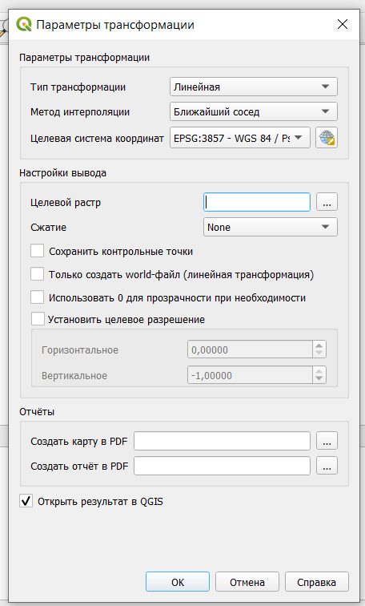
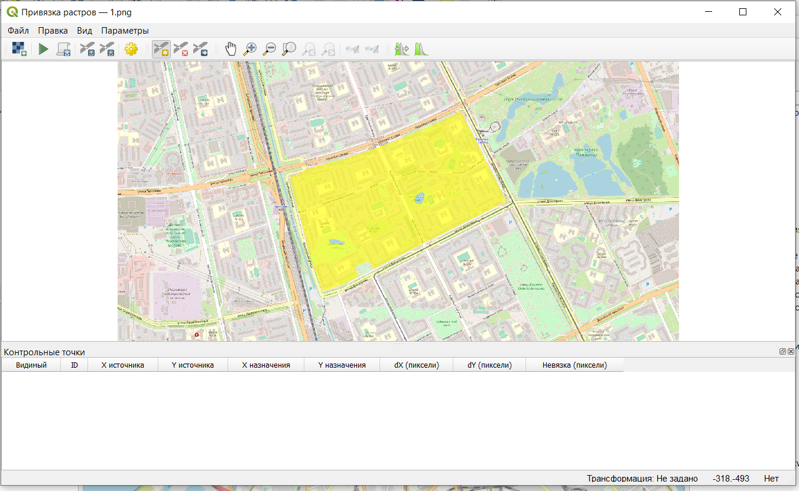
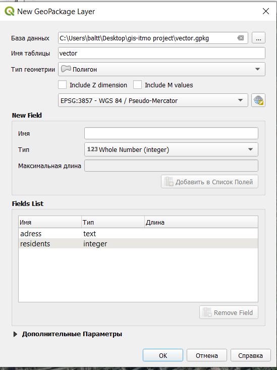

Оцифровка материалов
1 Геопривязка растра
В качестве исходной информации при векторизации, как правило, выступают растровые изображения. Это могут быть отсканированные оригиналы бумажных карт, выдержки из официальной документации, информация с градостроительных порталов, из градостроительной документации, спутниковые снимки или снимки, полученные с беспилотных летательных аппаратов, даже просто скриншоты экрана, а также тайловые подложки (типа той, что мы подгружаем из OpenStreetMap).
Геопривязка растра - это присвоение растровому изображению нужной географической системы координат.
В процессе привязки на растровом изображении для каждого пикселя, у которого есть условные координаты на растре, находится соотвествующая координата в целевой системе координат.
В качестве исходных данных возьмем информацию с Градостроительного портала Санкт-Петербурга https://portal.kgainfo.spb.ru/KGAMap/Map

Этот портал позволяет получать информацию из градостроительной документации Санкт-Петербурга, но только в растровом виде, выгрузки границ объектов в векторных форматах здесь не предусмотрено. Поэтому, если вы хотите воспользоваться данными портала, вам нужно будет из самостоятельно векторизовать.
Рассмотрим пример сохранения растровой картинки с границами функциональной зоны.
Для этого найдем на карте интересующую нас зону, щелкнем на нее, чтобы получить информацию об объектах в точке.
Далее выберем фунцию печати информации об функциональной зоне, после чего в новой вкладке откроется отчет с подробной информацией и схемой расположения объекта.
Просто сохраним картинку из отчета, чтобы в дальнейшем открыть ее в QGIS, выполнить геопривязку и осуществить векторизацию.
Создадим новый проект (рекомендую либо сразу его создавать в системе координат EPSG:3857, либо сразу после создания перепроецировать на лету в эту систему координат).
Для геопривязки растровых изображений в QGIS существует встроенный инструмент Привязка растров (может называться Геопривязка).

Далее откроется окно геопривязки растра.
В первую очередь нужно задать или проверить параметры трансформации растра (в строке меню Параметры — Параметры трансформации).

Основные параметры здесь:
тип трансформации - алгоритм преобразования растрового изображения, подробнее здесь;
метод интерполяции;
целевая система координат - система координат, которую вы хотите присвоить растру;
целевой растр - нужно указать путь и название файла, полученного в результате привязки.
Тип трансформации будет определять манипуляции, выполняемые с растром: это может быть просто линейный пересчет координат или вместе с масштабированием и растяжением.
Примерно различные варианты типов трансформации показаны ниже.

Для выполнения привязки нужно открыть растр , указать контрольные точки и их координаты в целевой системе координат.

Контрольные точки - это точки, по которым будет осуществляться привязка растрового изображения. У этих точек известны координаты на растровом изображении (как правило, в пикселях) и в целевой системе координат, то есть фактически по этим точкам растр “усаживается” в нужное место на карту.
Чтобы поставить контрольную точку, нужно щелкнуть на нее в окне привзяки на растре, а далее указать ее координаты в диалоговом окне.

Координаты можно ввести с клавиатуры (если они у вас есть), либо выбрать вариант С карты и просто щеклнуть на ту же самую точку на карте, после чего эти координаты пропишутся в диалоговом окне автоматически.
В качестве контрольных точек лучше всего использовать какие-то жесткие контура, на которых вы однозначно можете указать конкретную точку: угол дома, перекресток, угол парка и что-нибудь подобное.
Для различных вариантов трансформации рекомендуется разное минимальное число контрольных точек, но, как правило, общая рекомендация использовать не менее 3 точек. Желательно, чтобы эти точки не были расположены на одной линии.
После того, как вы укажете все контрольные точки и их координаты на карте, они будут отображены в таблице под растровым изображением в окне привязки.
Контрольные точки привязки можно сохранить и потом использовать в дальнейшем в других проектах (но только для того же самого растра).
Для завершения процесса привязки нужно нажать Начать привязку растра  после чего растр будет модифицирован и отобразиться в нужном месте на карте.
после чего растр будет модифицирован и отобразиться в нужном месте на карте.
Этот модифицированный растр уже будет иметь в себе сведения о системе координат и его местоположении, поэтому его потом можно будет использовать в дальнейших проектах уже без процесса привязки.
2 Ручная векторизация
Векторизация - процесс получения векторных географических данных. Как правило, имеется ввиду процесс получения на основе исходных растровых данных (сканированные карты, информация по официальным запросам, градостроительная документация и прочее).
2.1 Создание нового слоя и добавление в него объектов
Во всех предыдущих заданиях мы использовали уже готовые слои, которые просто добавляли в проект, но мы можем создавать и отрисовывать слои самостоятельно.
Для того, чтобы создать новый векторный слой в строке меню нужно выбрать Файл - Создать слой - Создать новый Geopackage слой.
После этого появится окно, в котором нужно задать имя файла, тип геометрии, систему координат, а также структуру таблицы атрибутов.

В качестве примера рассмотрим отрисовку домов, в атрибутивной таблице будут два поля: адрес и количество проживающих.

На этом этапе вы можете не создавать конкретную структуру таблицы атрибутов, так как вы всегда можете ее отредактировать позднее. По умолчанию будет создано 1 поле fid, которое будет заполнено автоматически номерами объектов.
Рекомендую все файлы и названия полей делать латиницей, потому что QGIS может не всегда корректно работать с данными, путь к которым прописан русскими буквами, а также с русскими названиями полей.
Также следует помнить, что названия файлов и слоев, а также названия полей в атрибутивной таблице лучше делать осмысленными, чтобы вы потом могли понять, что содержится в ваших данных.
Если вы не уверены в том, какие атрибуты вам нужны, то помните, что вы всегда можете отредактировать таблицу атрибутов уже после создания слоя и отрисовки объектов.
После того, как вы создадите слой, то он появится у вас в списке слоев, но, конечно, никаких объектов на карту не добавится, потому что они пока не отрисованы.
Для начала отрисовки объектов в слое необходимо включить режим редактирования.
После включения режима редактирования на панели инструментов станут активными кнопки создания объектов и редактирования вершин  (так как у нас слой с площадными объектами, то предлагается только создания полигонов и их редактирование, если бы был другой тип геометрии инструменты были бы немного другими).
(так как у нас слой с площадными объектами, то предлагается только создания полигонов и их редактирование, если бы был другой тип геометрии инструменты были бы немного другими).
Для начала отрисовки объекта нужно щелкнуть на первую точку полигона, а потом по всем поворотным, завершается отрисовка контура щелчком правой кнопкой мыши.

По умолчанию в программе стоит настройка открывать окно ввода атрибутов для каждого созданного объекта.

В этом окне можно ввести характеристики объектов сразу, либо оставить пустым, просто нажав кнопку ОК (если вы здесь нажмете кнопку Отмена, то объект не будет создан).
Автоматическое появление формы ввода можно отключить в настройках программы.

2.2 Прилипание объектов
При отрисовке некоторых объектов важно, чтобы между ними были общие точки, общие границы, не было наложений или наоборот дырок между объектами. Для того, чтобы соблюдать эти правила, нужно пользоваться инструментами прилипания.
На панели инструментов прилипания доступны следующие функции (слева направо)

разрешить прилипание;
выбор слоев, для которых будет доступно прилипание: все слои - прилипание будет осуществляться с учетом объектов всех слоев, которые есть в проекте (даже невидимых в данный момент), активный слой - прилипание будет осуществляться только для объектов текущего слоя.
тип объектов, к которым осуществляется прилипание (может быть выбрано сразу несколько вариантов):
к вершинам - прилипание только к узловым точкам;
к линиям - прилипание к любой точке линии;
к поверхности - прилипание к любой точке внутри полигона;
к центроиду - прилипание к геометрическому центру полигона;
середина отрезка - прилипание только к середине линии;
конечные точки линии - прилипание только к начальной или конечной точке линии.
порог прилипания - то есть, в какой области вокруг курсора будет искаться объект для прилипания;
топологическое редактирование позволяет сохранять общие границы между объектами. Если эта опция включена, то программа будет автоматически перестраивать общую границу для двух объектов (если таковая граница есть);
допустимы ли наложения между объектами;
разрешать прилипание к пересечениям - прилипание будет осуществляться к пересечениям двух объектов, даже если там нет вершины;
трассирование (tracing) - позволяет ускорить привязку к линейным объектам, при включении этой опции вам не нужно будет прощелкивать по всей линии, достаточно будет нескольких точек (если установаить значение отступа offset, то можно построить линию, параллельную существующей);
самоприлипание - позволяет осуществлять привязку отрисовываемого объекта к самому себе.

2.3 Редактирование объектов
2.3.1 Редактирование формы объектов
Для редактирования формы объектов следует пользоваться инструментом работы с вершинами 

Также для редактирования объектов есть целый ряд функций, представленных в пункте Правка \(\longrightarrow\) Редактировать геометрию строки меню.
2.3.2 Перемещение объекта
2.3.3 Поворот объекта
2.3.4 Разбивка объекта
2.3.5 Преобразование объекта в кольцо
Более подробно с функциями редактирования векторных объектов можно ознакомиться в документации по ссылке
Для удобства дополнительный инструменты оцифровки можно включить из строки меню Вид \(\longrightarrow\) Панели инструментов \(\longrightarrow\) Дополнительные инструменты оцифровки (и Панель инструментов оцифровки).

Дополнительные инструменты оцифровки включают в себя инструменты, входящие в группу инструментов изменения геометрии.

Панель инструментов оцифровки включает в себя инструменты создания геометрических объектов определенной формы: эллипсы, прямоугольники и многоугольники.

Также есть еще одна панель дополнительных инструментов оцифровки, открываемая из пункта меню Вид \(\longrightarrow\) Панели \(\longrightarrow\) Дополнительные инструменты оцифровки.

Открытая таким образом панель позволяет создавать геометрические объекты по их параметрам: задавая длины линий, углы между линиями и прочее. Подробнее про нее прочитать можно в документации.

В последнем обновлении версии QGIS 3.42 появились новые функции, упрощающие отрисовку объектов1:
- обрезать\вытянуть объект
- добавлена опция привязки объектов в геопривязке.
3 Автоматическая векторизация
3.1 Встроенные стредства QGIS
По умолчанию в QGIS есть инструмент преобразования растра в вектор, то есть автоматической векторизации.
Этот инструмент может быть запущен из строки меню Растр \(\longrightarrow\) Преобразование \(\longrightarrow\) Создание полигонов (растр в вектор).

С документацией можно ознакомиться по ссылке.
Пример работы автоматического векторизатора показан ниже.
Так как автоматическая векторизация здесь осуществляется фактически только по цвету пикселей вашего растра, то идеальным случаем для векторизации будут большие полигоны с равномерной заливкой и без контура, в других случаях вы можете получить слишком много маленьких полигонов, которые будут требовать дополнительной проработки и объединения.
Также следует отметить, что полученные полигоны не будут иметь гладкие и ровные стороны, а будут своеобразными “лесенками”, в силу того, что пиксели напрямую преобразовываются в объекты.
3.2 Модуль Bunting labs AI
Страница модуля: https://plugins.qgis.org/plugins/buntinglabs-qgis-plugin/
Сайт модуля: https://buntinglabs.com/solutions/ai-vectorizer-qgis-plugin
Репозиторий с кодом: https://github.com/BuntingLabs/buntinglabs-qgis-plugin
В январе 2024 года компания Bunting Labs выпустила плагин для QGIS Bunting Labs AI Vectorizer, который помогает оцифровывать растры, продолжая линии, начатые пользователем. Разработчики называют это “автозаполнением”, потому что плагин не делает всю работу сразу, а дорисовывает части линий на основе контекста, оставляя пользователю возможность в любой момент перехватить контроль.2
Плагин AI Vectorizer работает так: когда пользователь начинает отрисовывать векторный объект, модель “смотрит” на его действия и продолжает эту линию, независимо от ее значения.
Пользователь начинает оцифровывать линию или полигон по растру, и как только есть первые две вершины, маленький кусочек карты отправляется на сервер. Модель “смотрит” на нарисованный на карте отрезок и выбирает пиксели, по которым должны проходить следующие вершины, после чего плагин дорисовывает 50 следующих точек линии. Этот процесс подходит для любых линий, даже для пунктирных и тех, которые пересекают другие похожие объекты. А если плагин собьется с пути, можно просто отменить последний шаг и не терять при этом много времени.
Перед работой необходимо зарегистрировать аккаунт по ссылке. После этого вам на указанную в форме электронную почту придет письмо для активации аккаунта.
Далее следует установить модуль Bunting Labs AI Vectorizer.
Судя по всему модуль теперь работает бесплатно только в течение 30 дней с момента активации работы с ним.
Также в модуль входит сервис привязки с использованием искусственного интеллекта https://buntinglabs.com/solutions/ai-georeferencer.

В качестве бесплатной альтернативы можно воспользоваться модулем Raster tracer.

Краткую инструкцию по работе с модулем можно прочитать по ссылке или посмотреть видео.
Этот модуль работает только для линейных объектов, но при необходимости контура можно впоследствии преобразовать в полигоны.

Footnotes
Changelog for version: 3.42 https://changelog.qgis.org/en/qgis/version/3.42/↩︎
Плагин для AI-оцифровки растров в QGIS - https://cartetika.ru/tpost/4dta8sa621-plagin-dlya-ai-otsifrovki-rastrov-v-qgis↩︎